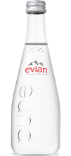

Glass Limited Edition
Our Water
Evian natural spring water contains only naturally occurring electrolytes from our unique origin. How? As our water travels to the source through layers of glacial rocks, it becomes enriched with a unique blend of minerals and electrolytes giving evian its distinctive, cool, crisp taste. This protected underground journey in the heart of the French Alps has given evian water its unique taste and mineral composition for over 200 years since Marquis first discovered it!
Alexander Wang 2016
750 mL
Christian Lacroix 2017
750 mL
Chiara Ferragni 2018
750 mL
Electrolytes & Mineral Composition (mg/l) Neutrally balanced pH: 7.2 Calcium: 80 / Magnesium: 26 / Potassium: 1 Bicarbonates: 360 / Sulfates: 14 / Chlorides: 10 / Silica: 15 evian has naturally occuring elecrolytes contributing to the taste nature intended.